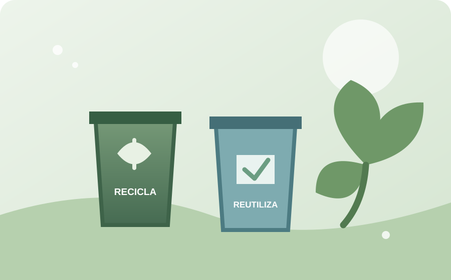

01
Eje 1
Medio Ambiente y Sustentabilidad Escolar
Fomentar el cuidado del entorno y la responsabilidad ambiental dentro del establecimiento.
1.1 · Puntos Limpios por Pabellón y Talleres
Instalar y rotular estaciones de reciclaje para plásticos, latas y papel/cartón, con calendario de retiro y acopio.
1.2 · Campaña «CEAT Más Verde»
Organizar jornadas voluntarias de arborización y jardinería, con áreas verdes apadrinadas por cursos.
1.3 · Reciclaje de Tapitas y Pilas
Disponer contenedores especiales de acopio permanente en los accesos principales para recolectar tapitas plásticas destinadas a fundaciones sociales y pilas en desuso.